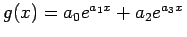
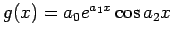
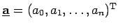
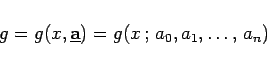
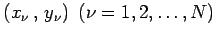
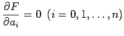

Inhalt Index DeskTop Bronstein

 Numerische Mathematik Approximation, Ausgleichsrechnung, Harmonische Analyse Approximation im Mittel Nichtlineare Quadratmittelaufgaben
Numerische Mathematik Approximation, Ausgleichsrechnung, Harmonische Analyse Approximation im Mittel Nichtlineare Quadratmittelaufgaben


Der prinzipielle Lösungsweg soll am eindimensionalen diskreten Fall gezeigt werden. Die Ansatzfunktion g(x) hänge nichtlinear von einigen Parametern ab.
| Beispiel A |
|
. In dieser Exponentialsumme treten die Parameter a1 und a3 nichtlinear auf. |
| Beispiel B |
|
. In diesem Ansatz sind a1 und a2 die nichtlinearen Paramter. |
Die Abhängigkeit der Ansatzfunktion g(x) von einem Parametervektor  soll durch die Bezeichnung
|  | (19.185) |
zum Ausdruck gebracht werden.
Es seien N Wertepaare  gegeben. Zur Minimierung der Fehlerquadratsumme
führen die notwendigen Bedingungen  auf ein nichtlineares Normalgleichungssystem, das iterativ z.B. mit Hilfe des NEWTON-Verfahrens gelöst werden muß.